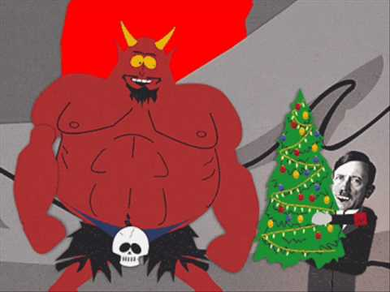

"Christmas Time in Hell" is a song sung by Satan in the Season Three episode, "Mr. Hankey's Christmas
Classics". Satan sings the song after hearing Adolf Hitler's sad version of "O Tannenbaum".
Julsånger är idag en integrerad del av julen i Sverige. Ibland
spelas de på högtalare hemma eller på någon karnival i stan.